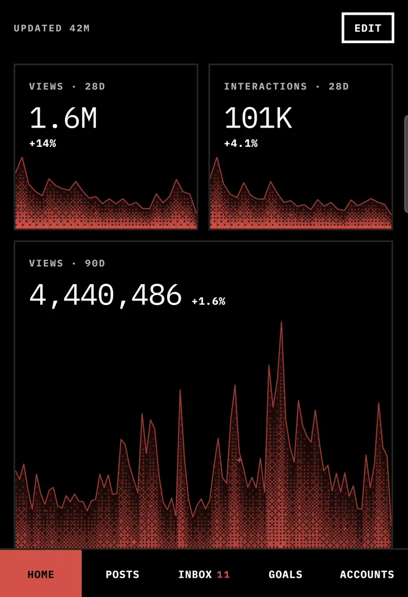
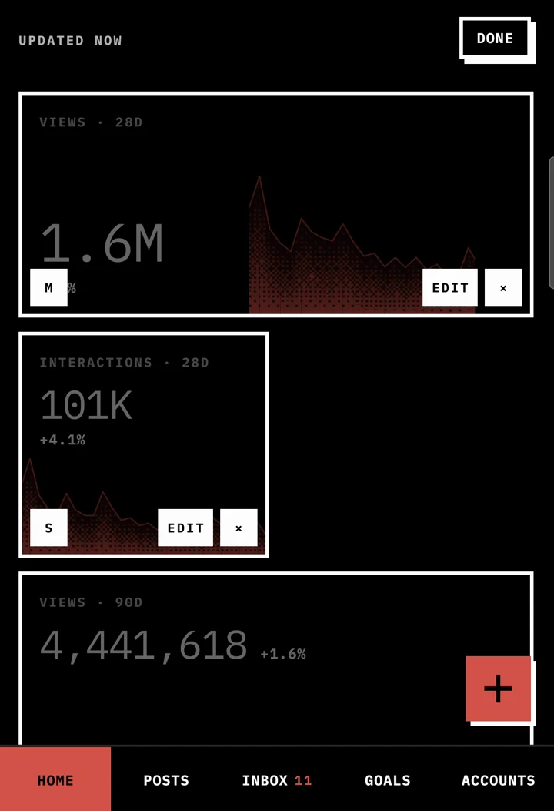
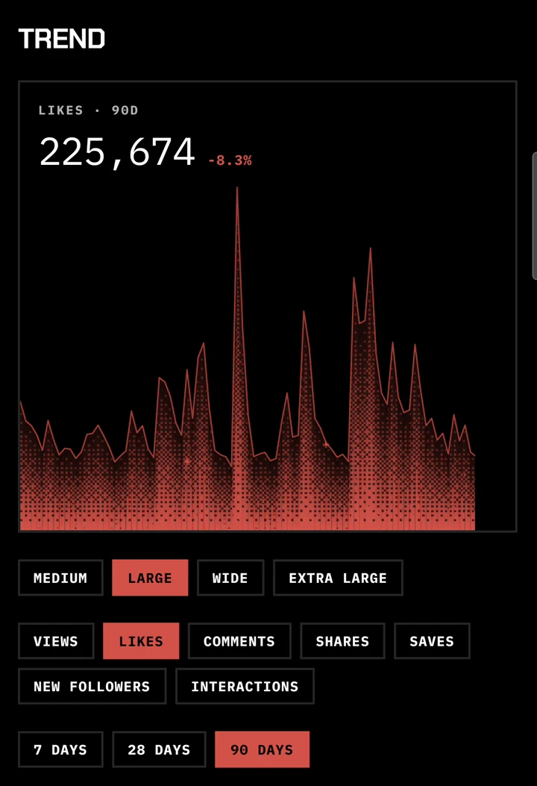
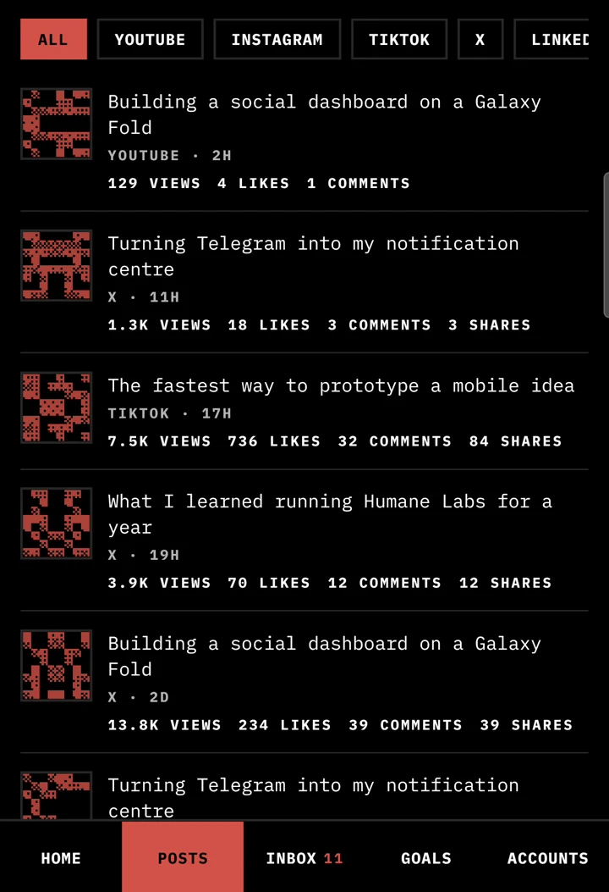
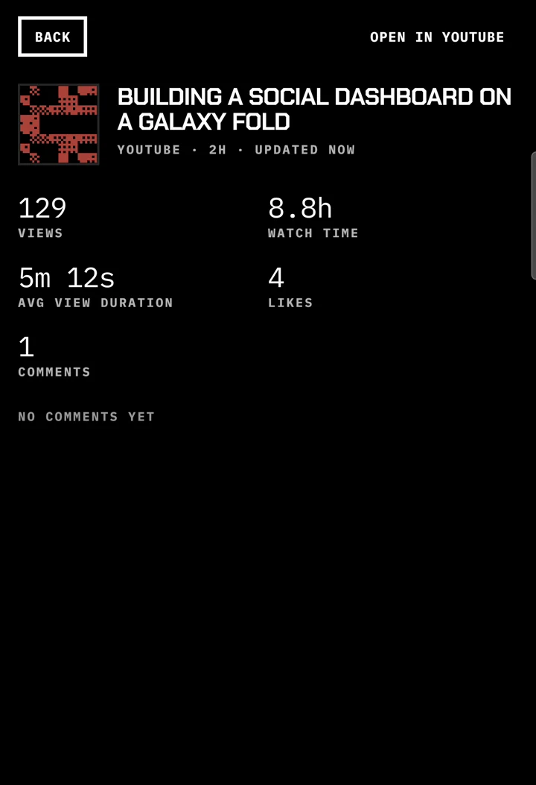
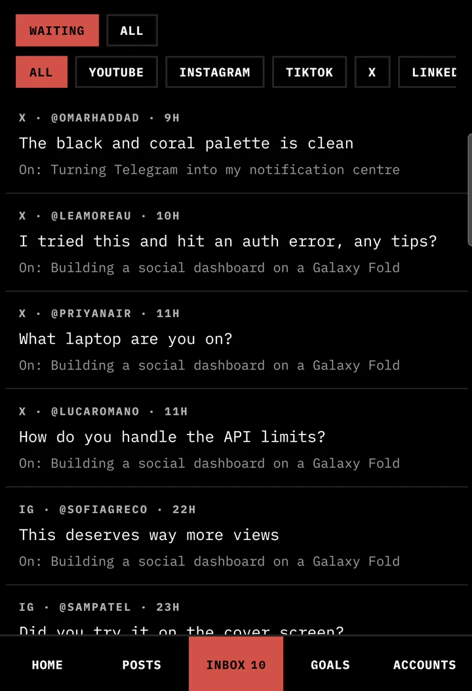
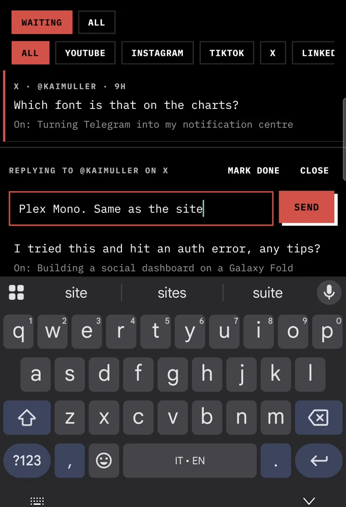
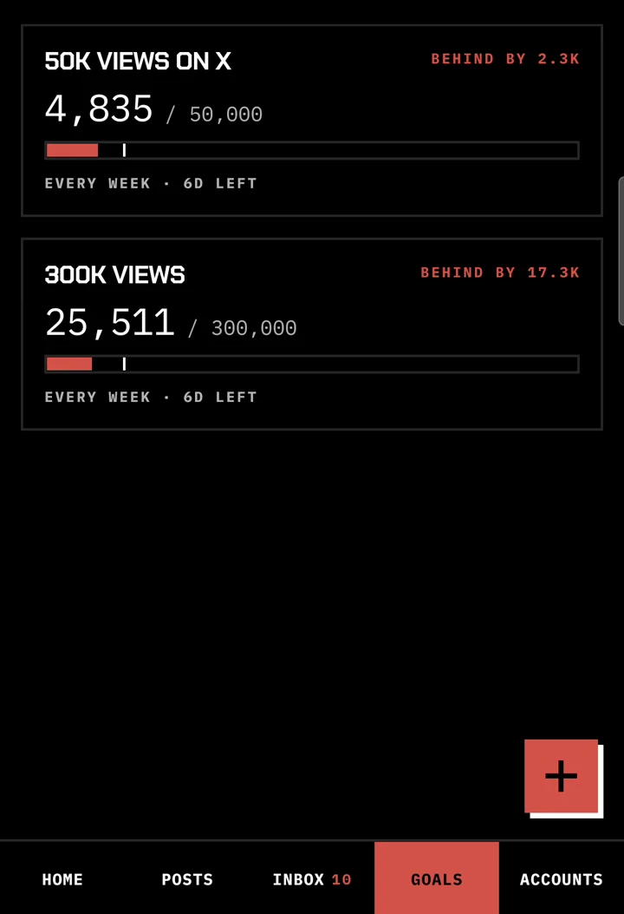
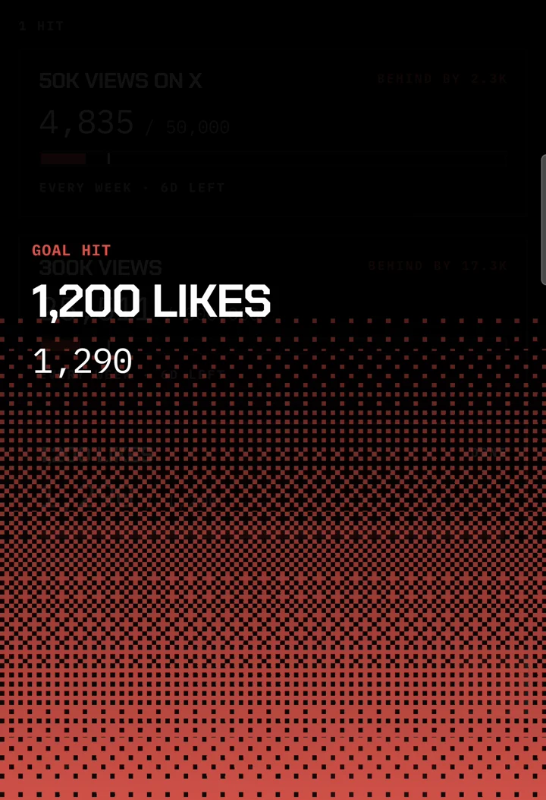

Five platforms. One home.
An Android app with views, native post stats and comments from every account you post on, on a home screen you build from widgets.
- YouTube
- TikTok
- X
Made of widgets
Resize a widget, change what it measures, add more, drag them anywhere. Each one picks its own metric, platform and time range.



Native numbers
Each post shows what its platform's own dashboard shows. Watch time and average view duration on YouTube. Reach, saves and profile visits on Instagram. Watched-in-full rate on TikTok.


One inbox
Comments from all five platforms in one list. Reply in place and the comment leaves the waiting list.


Goals
Pick a metric, a platform and a window: this week, this month or the next 30 days. The tick on each bar marks where you should be by today. Hit the target and the screen fills up.


On your home screen
Six Android widgets. Make one bigger and it shows more: per-platform rows, longer bars, streaks.